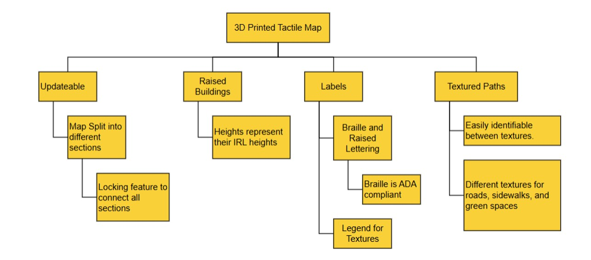

About our Process
Our process for creating 3D tactile maps involved several key steps to ensure accuracy, accessibility, and usability for visually impaired individuals.
We did work a lot for our map dimensions and the level of detail needed and the features to include and how to include them as well.
Here is an overview of our process:
User Needs & Requirements
We began by identifying what users would need most from a tactile map to ensure it would be easy to understand and navigate. From this, we outlined several key requirements that guided our design:
- Braille is Legible
- Visually Appealing
- Small Enough to reach
- Clearly Defined Features
- Easily Updated and Durable
Brainstorming
For Brainstorming, our team did explore a variety of ideas and for the layouts and the features of our map. We looked at how elements like raised buildings, pathways, and lables could fit together and support the user needs. The diagram below summarises our main concepts and how they connect.
Early Prototyping
In our first round of prototypes, we focused on quantifying how small, clear, and usable our tactile features could be. Adding basic measurements helped us compare results and decide what should move forward in the design. During this stage, we tested and came up with:
- Map Scaling: We did scale down a map to a ratio of 1000:1 in feet. The Actual ASU Tempe Campus map section we framed out is 4,000 x 2,530 feet and we scaled it down to 4 x 2.53 ft.
- Feature Spacing:
- Height Differences:We were also mindful of the building's height around the campus and did want to present the exact proportions the building had. We came up with each floor should have an elevation of 0.25in.
- First Print Tests: First prototypes were printed according to these designs and did tests on few visually-impaired candidates as well. The test was a success!
CAD Designing & 3D Printing
After our initial prototypes, we moved into refining the map digitally and producing updated physical sections.
Using SolidWorks, we traced building layouts from a 2D map of ASU's Tempe campus and extruded them into accurate 3D structures.
We adjusted heights, improved spacing, and prepared the model for printing.
Once finalized, the sections were printed in PLA and assembled to test fit, clarity, and durability.
Key Updates Made:
- Adjusted building heights to 0.25 inches per floor.
- Updated Braille and tactile lettering for better readablity.
- Improved sidewalks and overall spacking for clearer seperation.
- Divided the map into ~30 modular sections for wasier printing.
- Added grooves for puzzle-piece style assembly.
Printing Highlights:
- Printed using PLA at 15% infill density.
- Puzzle-Piece sections fit together clearly and locked in place.
- Braille initially printed too blunt, leading to wear concerns.
- Decided and designed to print the buildings and bases seperately for better durability and painting.
Summary Table:
| Process Stage | Purpose | Key Details |
|---|---|---|
| CAD Modeling | Convert 2D Campus layout into a tactile 3D Design | SolidWorks tracing, extruded structures, 0.25 in floor heights |
| Design Refinement | Improve tactile clarity | Updated Braille, improved sidewalks, cleaned spacing |
| Modular Breakdown | Enable easier prinitng and assembly | 30+ sections with interlocking grooves |
| 3D Printing | Test Physical clarity and fit | PLA, 15% infill, successful puzzle locking |
| Quality Findings | Identify improvements | Braille too blunt -- improved the braille Swtiched to seperate building/base prints |
If you have any questions or concerns, and would like to leave a feedback or suggestions, please fill out the form:
Feedback Form